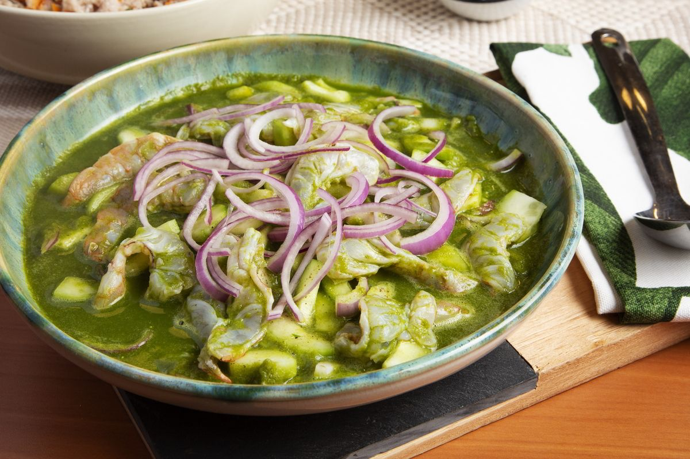

Aguachile Verde

Description*
Try this exquisite version of aguachile, a spicy shrimp ceviche from Sinaloa, Mexico and serve it with fresh tostadas.
Ingredients
- 1 lb shrimp, peeled and deveined
- 2 cucumbers
- 1 small white onion
- 1 cup lime juice
- 1⁄4 cup distilled vinegar
- 2 tsp. salt
- 1 red onion, sliced
- 1 cucumber, sliced
- 1 bunch cilantro
- 1/2 avocado, garnish
Steps
- Rough chop cucumbers, serrano chilies and onion. Place in blender. Add lime juice, vinegar and salt, then blend on high for 2-3 minutes until liquid is formed.
- Strain saving liquid and discard solids left behind.
- Butterfly cleaned shrimp and place in a bowl. Gently pour liquid over shrimp and stir evenly.
- Chill shrimp and allow to marinate for at least 2 hours. The shrimp is ready to serve once it has become white and firmed up.
- Slice cucumbers and onions thinly and mix into cooked shrimp.
- Serve in a bowl with the liquid.
- Garnish with avocado slices and cilantro leaves.
- Drizzle with olive oil.
*Recipe by Ted Montoya from wearecocina.com